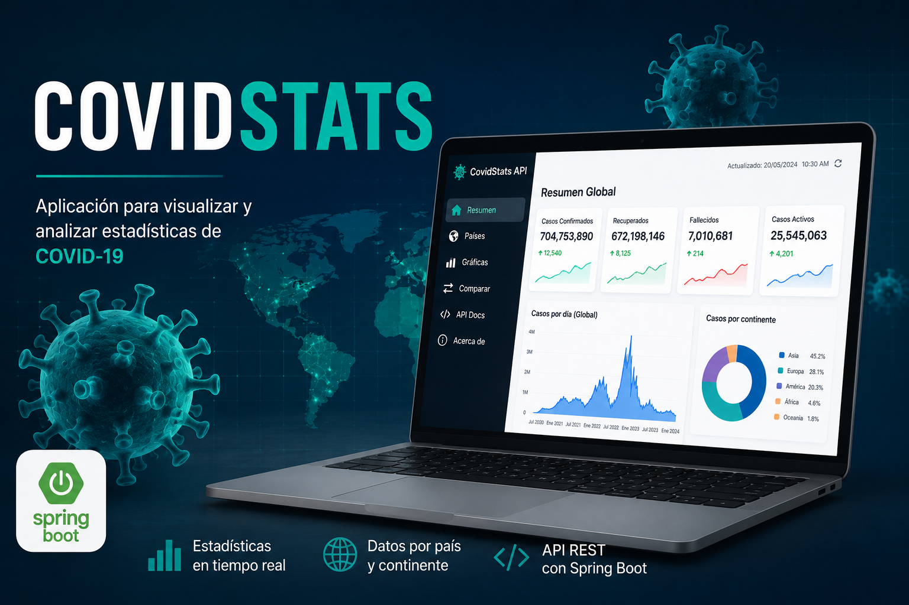

Desarrollador de software | Estudiante de Ingeniería en Sistemas
Soy Rudy Geovany González Arana, estudiante de Ingeniería en Sistemas en la Universidad Mariano Gálvez, campus Jutiapa, procedente de Jalpatagua, Jutiapa. Me interesa seguir aumentando mis conocimiento en desarrollo web para en un futuro poder aplicar mis habilidades en los distintos proyectos que se me presenten ya sea en la universidad o en el ámbito laboral. Me gusta aprender cosas nuevas y ponerlas en práctica, por lo que siempre busco oportunidades para mejorar mis habilidades y aplicar lo que aprendo en la universidad a proyectos reales de trabajo.
Sistema para gestionar reservas de asientos, desarrollado como proyecto del curso de Programación III.
Ver en GitHub
Aplicación para visualizar y analizar estadísticas de Covid-19, proyecto del curso de Programación III.
Ver en GitHubCompilador con temática GPS y parser de descenso recursivo, desarrollado para el curso de Compiladores.
Ver en GitHub